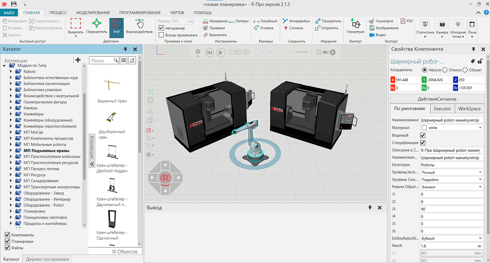

Представление Планировка позволяет создавать планировки в трехмерном мире с использованием компонентов.


Доступ
Чтобы получить доступ к планировке:
·Щелкните вкладку Главная.
Панели
На вкладка Главная по умолчанию отображаются следующие панели:
·Каталог для просмотра подключенных источников файлов и добавления их в планировку.
·Дерево построения для перечисления, выбора и редактирования компонентов в макете
·Свойства для чтения и записи свойств выбранных компонентов в макете.
·Вывод, для отображения информационных сообщений.
Контекст
Контекст представления планировки — это конфигурация планировки.
Вы можете:
·Открывайте, сохраняйте и создавайте новые планировки.
·Добавляйте, выбирайте, редактируйте и управляйте компонентами.
·Запускайте и записывайте симуляции в формате 3D PDF.
·Визуализируйте и рендерите компоненты в различных настройках среды.
·Экспорт компонентов и планировок виде изображений и файлов САD.
Команды
По умолчанию следующие команды отображаются на ленте при переходе на вкладку Главная.
Название |
Описание |
|---|---|
Копировать |
Копирует текущий выбор в буфер обмена. |
Вставить |
Добавляет содержимое буфера обмена в активную область или поле рабочей области в зависимости от типа данных. |
Удалить |
Удаляет текущий выбор. |
Сгруппировать |
Добавляет выбранные компоненты в новую группу. |
Разгруппировать |
Удаляет выбранные компоненты из одной или нескольких групп, а затем удаляет эти группы. |
Выделить |
Позволяет прямо и произвольно выбирать компоненты в трехмерном мире с помощью перечисленных команд. Прямоугольная область Выберите, нарисовав поле выбора. Произвольная область Выберите, нарисовав путь выбора, чтобы сформировать замкнутый контур. Выбрать все Выбирает все компоненты. Инвертировать выделение Формирует новый выбор каждого компонента, не входящего в текущий выбор. |
Переместить (Действия) |
Позволяет перемещать выбранный компонент вдоль оси или плоскости, вращать вокруг оси, привязывать и выравнивать по точке в трехмерном мире. |
PnP |
Позволяет указателю подключать выбранные компоненты к другим компонентам для формирования физических соединений. Примечание: Выбранный компонент должен иметь интерфейс, иначе его нельзя будет подключить ни к одному компоненту. Другие компоненты должны иметь совместимые интерфейсы, иначе выбранные компоненты не будут подключаться к ним. |
Взаимодействие |
Позволяет указателю перемещать соединения и другие интерактивные свойства компонентов с одной или несколькими степенями свободы в трехмерном мире. |
Размер |
Определяет интервал привязки выбранного объекта к оси или плоскости при перемещении. |
Авторазмер |
Включает/выключает автоматический расчет интервалов привязки выбранного компонента по оси или плоскости при использовании перемещения. |
Всегда привязывать |
Включает/выключает автоматическую привязку выбранного компонента вдоль оси или плоскости через определенные промежутки времени при использовании перемещения. |
Измерение |
Измеряет расстояние и/или угол между выбранной геометрией в трехмерном мире. Дополнительные параметры отображаются в области задач. Режим Измерьте расстояние, угол или и то, и другое. Настройки Определите, как визуализировать измерение и в какой системе координат основывать измеренные значения. Тип привязки Определите тип геометрии для выбора в трехмерном мире. |
Привязка (Инструменты) |
Позволяет привязать выбранный компонент к местоположению в трехмерном мире, используя от одной до трех точек. Дополнительные параметры отображаются в области задач. Режим Привязка к одной точке, середине двух точек или центру дуги, состоящей из трех точек. Настройки Влияет на положение, ориентацию или и то, и другое и по какой оси. Тип привязки Определите тип геометрии для выбора в трехмерном мире. |
Выровнять |
Позволяет выровнять точку, ребро, грань компонента относительно выбранной геометрии в 3D мире. Настройки Установить Положение и/или Ориентацию. Предварительный просмотр результата. Тип привязки Определите тип геометрии для выбора в трехмерном мире. |
Паттерн |
Создает линейный или круговой массив компонентов из выбранного компонента. Дополнительные параметры отображаются в области задач. |
Линейный |
Создает новый размер, измеряющий расстояние между двумя точками. |
Угловое |
Создает новый размер, измеряющий угол между двумя линиями (гранями). |
Интерфейсы |
Позволяет удаленно соединять компоненты в трехмерном мире с помощью абстрактных интерфейсов. Дополнительные параметры отображаются в области задач. Компонент Выберите компонент, который имеет возможность удаленного подключения к другим компонентам. В качестве опций отображаются только компоненты с этой возможностью. Интерфейс Выберите интерфейс в компоненте, используемом для удаленных подключений. Подключения Определить подключения к интерфейсу компонента. Доступное соединение выделено желтым цветом в трехмерном мире, тогда как активное соединение выделено зеленым цветом. В качестве опций отображаются только совместимые интерфейсы. Карта Контекстно-медийной сети Включить/выключить отображение редакторов интерфейса в 3D-мире. Если активно, отображается редактор выбранного компонента, а также редакторы подключенных компонентов. Другие компоненты с совместимыми интерфейсами будут отображать свои редакторы по умолчанию в виде кнопок развертывания. Показать линии подключения Включить/выключить видимость проводов, соединяющих редакторы интерфейса в 3D-мире. Эта опция также доступна в редакторе выбранного компонента. Показать неабстрактные интерфейсы Включить/выключить возможность использования неабстрактных интерфейсов. Как правило, это используется для отображения и редактирования физических подключений. Примечание: По умолчанию редакторы интерфейса (узлы) для компонентов не отображаются, если у них нет двух соответствующих интерфейсов с выбором. Вы можете изменить это, отредактировав «interfacesNodeVisibilityThreshold» в файле app.config. |
Сигналы |
Позволяет соединять сигналы компонентов и входы/выходы робота друг с другом в трехмерном мире. Дополнительные параметры отображаются в области задач. Компонент Выберите компонент с булевыми сигналами. В качестве опций отображаются только компоненты с этой возможностью. Сигнал Сигнал компонента. Если компонент является роботом, входы помечаются как «Вход», а выходы помечаются как «Выход». Вы можете сортировать сигналы по направлению и названию. Вы можете фильтровать сигналы, которые являются входами и выходами, а также сигналы с активным соединением. Подключения Определите подключения к сигналу компонента. Если сигнал находится в другом компоненте, выберите другой компонент, а затем сигнал. Если ввод или вывод осуществляется другим роботом, выберите другого робота, а затем ввод или вывод. Если действие в роботе, выберите выход робота, а затем используйте раздел Конфигурация действий, чтобы определить действие. У вас есть возможность отключить все сигналы в компоненте. Если компонент является роботом, у вас есть возможность отменить все действия, но соблюдайте осторожность, чтобы не удалить предопределенные действия для выходов с 1 по 81. Подсказка: Для входов и выходов робота мы рекомендуем использовать сигналы 100 и выше для новых подключений сигналов и действий. Это помогает избежать конфликта с предопределенными действиями для роботов. Карта Контекстно-медийной сети Включить/выключить отображение редакторов сигналов в 3D-мире. Если активно, отображается редактор выбранного компонента, а также редакторы подключенных компонентов. Другие компоненты с совместимыми сигналами будут отображать свои редакторы по умолчанию в виде кнопок развертывания. Показать линии подключения Включить/выключить видимость проводов, соединяющих редакторы сигналов в 3D-мире. Эта опция также доступна в редакторе выбранного компонента. Включить переключение сигналов Включить/выключить возможность установки значения подключенных сигналов во время симуляции. Щелкните соединитель (круг) сигнала на панели задач или в редакторе в трехмерном мире, чтобы переключить значение. Соединитель зеленый, когда значение равно true. |
Прикрепить |
Присоединяет выбранный компонент к узлу другого компонента, тем самым формируя новую иерархию родитель-потомок в планировке. |
Открепить |
Отсоединяет выбранный компонент от узла другого компонента, тем самым удаляя иерархию родитель-потомок из планировки. |
Геометрия (Импорт) |
Импортирует геометрию поддерживаемого файла. Дополнительные параметры отображаются в области задач. Uri Расположение файла. Качество тесселяции Определите уровень детализации для рендеринга геометрии с использованием треугольников. Включить Определите, что включать в геометрию. Если вы включите точки, они будут импортированы и сгенерированы как объекты-рамки. Правило создания материала Определяет правила создания материала, если в базе нет такого материала. Дерево Элементов Определите, какую иерархию использовать для геометрии. Организовать геометрию Определите, как группировать геометрию. Вверх по оси Определите ось для выравнивания верхней и нижней части геометрии. Минимальный диаметр отверстия Определение допуска для удаления отверстий в геометрии. Минимальный диаметр геометрии Определите допуск для отказа от импорта набора геометрии на основе его минимальной ограничивающей окружности. Чувствительность к восстановлению Соедините точки, линии и ребра геометрии в пределах допуска, чтобы исправить ошибки. Единицы измерения Преобразование единиц файла на основе текущей настройки семейства единиц измерения. |
Геометрия (Экспорт) |
Экспортирует геометрию всех или выбранных компонентов в новый поддерживаемый файл. |
Изображение |
Позволяет захватывать трехмерный вид мира в пределах границы, а затем экспортировать его в новый файл или копировать в буфер обмена. Дополнительные параметры отображаются в области задач. |
Видео |
Записывает симуляцию в виде видео. |
Записивыет симуляцию в формате 3D PDF. |
|
Статистика |
Запускает информационную панель для настройки диаграмм и составления отчетов о данных, собранных во время моделирования. |
Печать графика |
Распечатывает все или выбранные диаграммы на панели статистики. |
Экспортировать график |
Экспорт всех диаграмм на панели статистики в файл CSV или Excel. Экспортировать в Excel Один файл с каждой диаграммой, содержащейся на отдельном листе. Экспортировать в CSV Один файл для каждой диаграммы, поэтому две диаграммы означают два файла CSV. |
Интервал |
Определяет глобальную частоту дискретизации для отчетов о свойствах поведения статистики. Это включает кумулятивную, интервальную и основанную на состоянии статистику. По умолчанию во время симуляции данные сообщаются каждые 60 секунд. |
Аниматор камеры |
Определяет движения камеры для активной планировки в 3D-мире. Дополнительные параметры отображаются в области задач. Время симуляции Перемещает камеру для просмотра в определенное время. Относительное время Перемещает камеру, используя время относительно предыдущего движения. Вид Определяет вид камеры для текущего времени Время Определяет время движения камеры. При использовании Время симуляции камера будет находиться в поле зрения в указанное время. Образовать дугу Включить/выключить метод круговой интерполяции движения камеры. + Добавляет новое движение камеры. Мусорное ведро Удаляет движение камеры. |
Привязка (Исходная точка) |
Позволяет привязать исходную точку выбранного компонента к местоположению в трехмерном мире, используя от одной до трех точек. Дополнительные параметры отображаются в области задач. Режим Привязка к одной точке, середине двух точек или центру дуги, состоящей из трех точек. Настройки Влияет на положение, ориентацию или и то, и другое и по какой оси. Тип привязки Определите тип точки для выбора в трехмерном мире. Применить Сохраните новое положение и/или ориентацию начала координат. |
Переместить (Исходная точка) |
Позволяет перемещать исходную точку активного компонента в 3D-мире. Дополнительные параметры отображаются в области задач. Подвердить Сохраните новое положение и ориентацию начала координат. |
Восстановить окна |
Восстанавливает рабочее пространство текущего представления до значения по умолчанию. |
Окна |
Отображает список панелей, которые можно показать/скрыть из текущего вида рабочей области. |